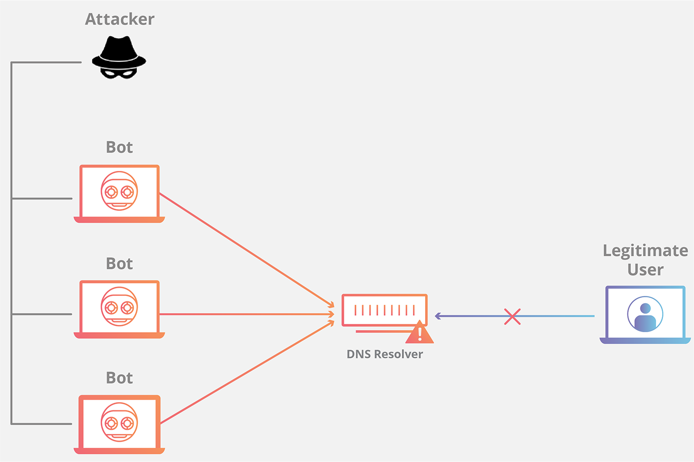
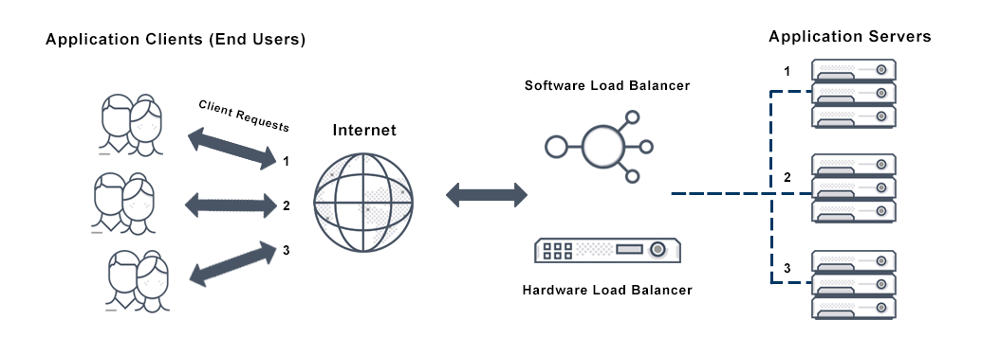

Flood attack é um tipo de ataque que tem a finalidade de
inundar a banda de um ou vários servidores DNS, isto é,
um ataque de "negação de serviço" (DoS). Esse tipo de ataque
faz com que mensagens legítimas não possam ser respondidas,
e, consequemente, que o serviço fique indisponível.
Como exemplo podemos citar o ataque realizado em 2016 aos
servidores da Dyn.

Dyn, Inc. é uma companhia que gerencia a performance da rede
e aplicações web seguras que oferece produtos para monitorar,
controlar e otimizar infraestruturas online, além dos
serviços de registro de domínio e email. Foi adquirida pela
Oracle Corp. em 2016.
Em 21 de Outubro de 2016 a rede da Dyn foi atacada três vezes
por um ataque de negação de serviço distribuído (DDoS),
deixando grandes sites como Twitter, Reddit, Github,
Amazon.com, Netflix, Spotify, Runescape, Quora e o próprio
site da Dyn inalcançáveis através do Uniform
Resource Locator (URL), embora a maioria dos
sites tenha permanecido acessível via endereço IP de forma
manual.
Além disso, o número de dispositovs IoT sem mecanismos de
segurança tem aumentado substancialmente, permitindo ataques
botnets de, por exemplo, malwares como o Mirai, que se propaga
através de outros dispositivos IoT e foi um dos responsáveis
pelo ataque citado à rede Dyn.
Mais sobre Mirai em: https://www.kaspersky.com.br/
Formas de mitigar o ataque
Uma proposta para mitigar um flood attack é colocar n
servidores DNS de forma circular/hierarquica/backup.
Por exemplo, na topologia circular o primeiro fornece a
resposta, depois o segundo e assim por diante, como na
figura abaixo.

O tempo ou o tráfego para cada provedor pode ser balanceado
de forma desigual dependendo de cada caso.
Então, se há n servidores diferentes para resolução de domínios
e passa a haver n-1 devido a um ataque DDoS por inundação,
ainda assim os domínios estarão acessíveis enquanto os n-r
servidores funcionarem. Além disso, é possível configurar
a maioria dos servidores para bloquear mensagens ICMP,
impedindo outro tipo de ataque DDoS como o que ocorreu
aos 13 servidores raíz em 31 de Outubro de 2002 com mensagens
ping enviadas por botnet. (Kurose, 2013)